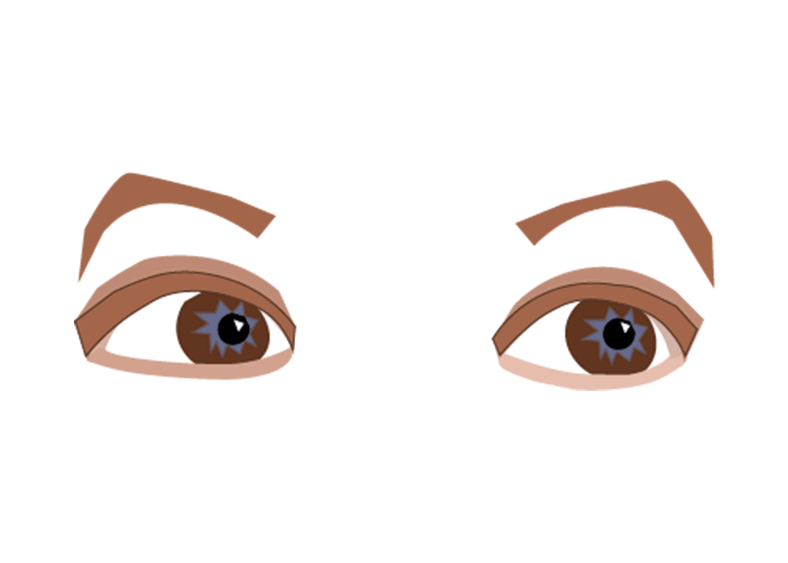
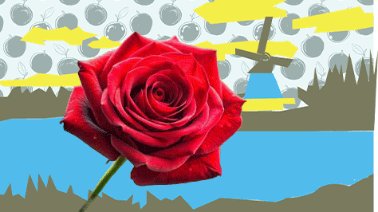

I created my illustrated environment by first placing a real photograph into the file and setting it as a template layer so it would stay fixed while I worked. This allowed me to trace and reinterpret the scene while building the illustration on separate layers. To organize the composition, I divided the artwork into foreground, middle ground, and background sections, which helped me try maintain depth and made it easier to control different elements of the scene. I was restricted to only three colors from a triadic color scheme, which made it difficult to be creative for me. I used colors #7A795D, #FAF441, and #3FBDFA. Instead of relying on automated tools like Image Trace, I constructed all elements manually using the pen tool and basic shapes. After completing the composition, I exported the artwork as a 1920×1080 PNG to upload to github.
Contact: @britany.palaguachi07@myhunter.cuny.edu Index page